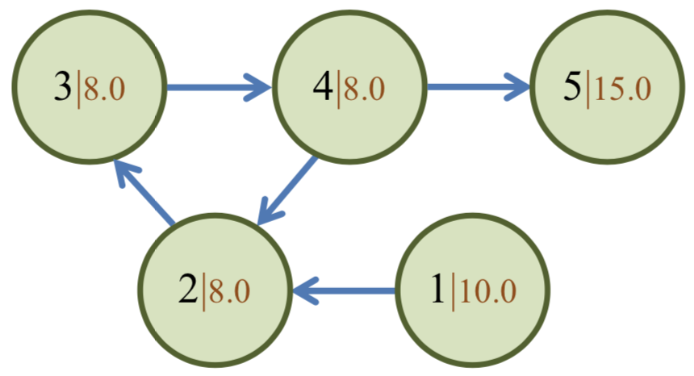

有向图 $G$ 有 $n$ 个顶点 $1, 2, ...,n$，点 $i$ 的权值为 $w(i)$。现在有一只蚂蚁，从给定的起点 $v_0$ 出发，沿着图 $G$ 的边爬行。开始时，它的体力为 $1$。每爬过一条边，它的体力都会下降为原来的 $ρ$ 倍，其中 $ρ$ 是一个给定的小于 $1$ 的正常数。而蚂蚁爬到某个顶点时的幸福度，是它当时的体力与该点权值的乘积。
我们把蚂蚁在爬行路径上幸福度的总和记为 $H$。很显然，对于不同的爬行路径，$H$ 的值也可能不同。小Z对 $H$ 值的最大可能值很感兴趣，你能帮助他计算吗？注意，蚂蚁爬行的路径长度可能是无穷的。
每一行中两个数之间用一个空格隔开。
输入第一行包含两个正整数 $n,m$，分别表示 $G$ 中顶点的个数和边的条数。
第二行包含 $n$ 个非负实数，依次表示 $n$ 个顶点权值 $w(1),w(2),...,w(n)$。第三行包含一个正整数 $v_0$，表示给定的起点。
第四行包含一个实数 $ρ$，表示给定的小于 $1$ 的正常数。
接下来 $m$ 行，每行两个正整数 $x,y$，表示 <$x,y$> 是 $G$ 的一条有向边。可能有自环，但不会有重边。
仅包含一个实数，即 $H$ 值的最大可能值，四舍五入到小数点后一位。
5 5 10.0 8.0 8.0 8.0 15.0 1 0.5 1 2 2 3 3 4 4 2 4 5
18.0
【样例说明】

当蚂蚁的爬行路径为 1→2→3→4→2→3→4→...→2→3→4→...时，$H= 10.0+8.0*0.5+8.0*0.5^2+⋯$。可以证明，这个无穷序列的总和为 18.0，且这就是 $H$ 的最大值。
另外，若本样例中 $w(5)$ 改为 17.0，其余数据不变，则当路径为 1→2→3→4→5 时，$H= 18.0625$。可以证明，这就是此时$H$ 的最大值。
【数据规模】
对于20%的数据，$ρ≤0.5$；另有20%的数据，保证 $H$ 的最大值在有限路径上取到；对于100%的数据，$n≤ 100，m≤ 1000，ρ≤1–10^{-6}，w(i)≤100 (i= 1, 2,...,n)$。
 Comet OJ
Comet OJ